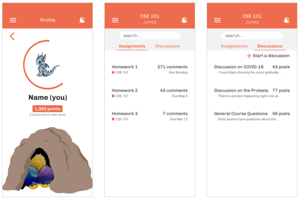

Remote learning becomes engaging.
Spring 2020 (5 weeks)
Collaborators: Tiffany Do, Jackson Grenier,
Christina Marquez, John-Paul Pascua
UX Researcher / Designer
User Research
Prototyping
Product Design
01 Overview
Background
During our first quarter experiencing online learning, we felt disconnected from our professors, fellow classmates, and assignments, especially with classes shifting to an aynschronous approach.
Problem Statement
How might we improve engagement in online education for students and instructors?
02 Users
Personas
Research Methods
User survey
(59 responses)
User interview
(6 responses)
- Survey instructors and students about their current experiences with remote learning
- Interview instructors and students about their daily routine and how remote learning affects them
- Conduct online research regarding remote learning from articles and forums
Research Insight
Common issues include accessibility, distractions, and lack of motvation.
Students feel less engaged due heavier workloads, less social interactions, and a perceived loss of learning.
Instructors struggle to connect with students due to diverse student experiences with quarantine and limitations of remote teaching.
Target Audience
We decided to focus on how to keep students engaged with their classes. We wanted to help them with staying on top of their assignments along with retaining the topics being taught.
03 Wireframes
I drew wireframes with the idea to create a reward system in interacting with tasks. The rewards center around a cute pet that can get items based on completion of tasks.
04 Low Fidelity Prototypes
We had several different ideas and each created our own low fidelity prototypes. I create prototypes focusing on the idea that students were struggling to keep up with school work and maintain engagement with with their classes.
Dashboard
Assignments
User Testing
Some feedback we got was to incorporate the incentive system but make sure it differs from existing apps.
05 Branding
Moodboard
Styleguide

06 High Fidelity Prototypes
Added Style
With our new style guide, we created higher fidelity prototypes that were incentive-oriented. We chose a dragon as our mascot because we wanted to evoke feelings of passion and prosperity.
Added Style
With our new style guide, we created higher fidelity prototypes that were incentive-oriented. We chose a dragon as our mascot because we wanted to evoke feelings of passion and prosperity.
Feedback
- The color didn't stand out and it "felt like a bank app" – detached and impersonal
- Needs to differentiate from Canvas